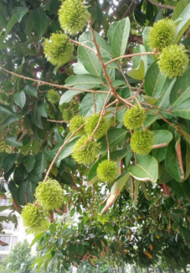

Info Tanaman Banyumanik

rambutan
Kingdom: Plantae
Divisi: Tracheophyta
Class: Magnoliopsida
Ordo: Sapindales
Famili: Sapindaceae
Genus: Nephelim
Spesies: Nephelim lappaceum
🌱 Budidaya
- Lingkungan: Tanah subur, gembur, dan tidak tergenang. Curah hujan tinggi, cocok di dataran rendah hingga menengah.
- Penanaman: Jarak tanam 8–10 meter antar pohon. Lubang tanam 60x60x60 cm berisi pupuk kandang.
- Perawatan: Siram rutin, terutama saat kemarau. Pemupukan setiap 3–4 bulan (NPK & organik). Pangkas cabang tak produktif untuk bentuk tajuk dan sirkulasi udara.